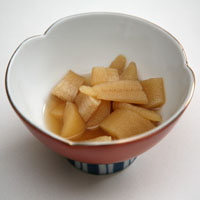
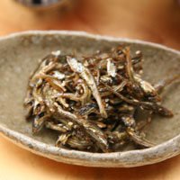

Beef, Chicken & Pork RecipesTonkatsu & KorrokeTonkatsu came from Portugal, and is considered a western dish in Japan. Ton means pork, and katsu is a Japanese pronunciation of the word cutlet. It is now widely loved, especially among young people who can tolerate fried food. Since tonkatsu and korroke (croquettes) are as easy to make in large quantities as small, it is reserved for family parties and get-togethers at our house. My sisters and I talk while we bread the cutlets and korroke, and then serve them piping hot as they are fried.RECIPE SukiyakiDuring my childhood, we used to have sukiyaki at least once a month. We had an electric tabletop cooker that we used in lieu of a gas range. It worked wonderfully, and we loved this hearty meat, tofu and vegetable dish. Nowadays, as we hardly ever eat meat, we never have this at home. However, when we visit people in Japan, they immediately assume my husband likes meat, and so we inevitably are treated to sukiyaki or shabu shabu. Sukiyaki is very easy to make at home, even if you don’t have a tabletop range or skillet. You can use any sturdy and attractive wide skillet, cook it and then bring the whole to the table, placing it on a hot pad or wooden board. Since the Japanese way of cooking includes a little meat and a lot of vegetables, it is also a healthy way to satisfy your meat cravings.RECIPE Chicken Kara-age (Japanese fried chicken)We eat fried chicken in small doses as an accompaniment to cocktails and cold beer; never as a main course. This classic recipe that yields flavorful and crispy bite-sized nuggets is used by many households throughout Japan. The key ingredients that differentiate this from Western fried chicken is the soy sauce and garlic marinade. While it is most delicious served piping-hot and crispy, is it also tasty at room temperature and is a popular component for lunch when placed in bento boxes. Try it with hot Japanese mustard, shichimi togarashi, sansho pepper or even Vietnamese sweet chili sauce.RECIPE |
|


|